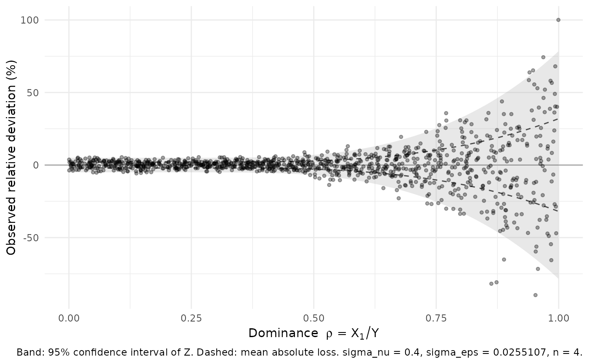

Plots the relative deviation actually undergone by each cell against its
dominance level, and overlays the theoretical envelope predicted before any
data were touched: the level-level confidence band of the relative loss
(Definition 4) and the mean absolute loss (Proposition 3).
Arguments
- x
A table returned by
pm_perturb().- level
Confidence level of the band (default 0.95).
- colour_by
Optional column name used to colour the points (e.g. a publication stratum).
- alpha
Point transparency; lower it on large tables.
- n_grid
Number of dominance values used to draw the envelope.
Details
The mechanism being analytical, the cloud of points should fill the band and straddle the mean lines. That agreement is the natural consistency check between what was promised at calibration time and what the table received.
Examples
set.seed(123)
N = 1000
params <- pm_commit_dominance(pm_commit_diff(pm_params()), sigma_nu = 0.4, n = 4)
#> Differencing step committed: beta = 0.05, tau = 0.95 -> sigma_eps = 0.0255
#> loss floor at rho -> 0: E|Z| = 2.04%, upper 95% CI = 5.00%
#> Dominance step committed: sigma_nu = 0.4, n = 4 (beta = 0.2, sigma_eps = 0.0255107)
#> worst-case scenario-I risk: 0.482, reached at rho = 0.875
#> information loss E|Z| : 2.04% (rho -> 0) to 31.98% (rho = 1)
#> information loss CI95%: 5.00% (rho -> 0) to 78.56% (rho = 1)
#> ceiling tau = 0.9: met (margin 0.418).
rhos <- runif(N, 0, 1)
tab <- data.frame(turnover = runif(N, 0,1000), ck = runif(N, 0, 1))
tab$x1 <- tab$turnover * rhos
res <- pm_perturb(tab, "turnover", "x1", "ck", params)
pm_plot_impact(res)
